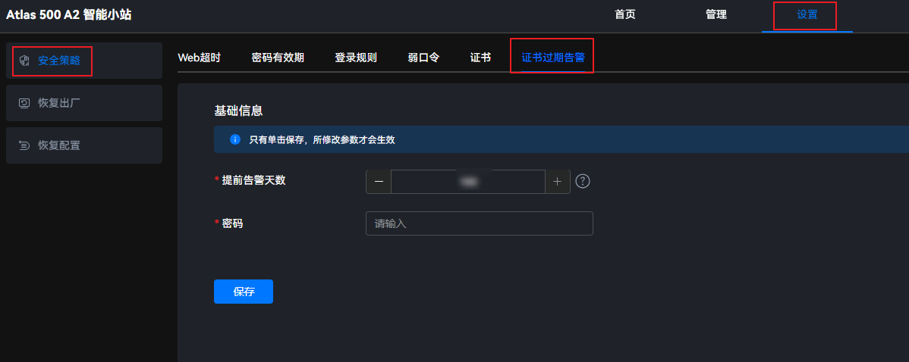

设置证书过期提前告警时间
- 在主菜单中选择。图1 证书过期告警
 - 设置提前告警天数。
可以单击文本框，手动输入提前告警天数。
可以单击
 ，设置提前告警天数。设置的起始提前告警天数为7天，单击
，设置提前告警天数。设置的起始提前告警天数为7天，单击 后，每单击一次增加一天；每单击
后，每单击一次增加一天；每单击 一次减少一天。
一次减少一天。
取值范围为7～180，单位为天，默认值为10天。
为保障系统安全性，建议设置合适的有效期，并定期更新证书。
- 在“密码”文本框中输入系统当前的用户密码。
- 单击“保存”。
界面弹出“保存成功”提示框，表示证书过期提前告警时间设置成功。
可以单击文本框，手动输入提前告警天数。
可以单击，设置提前告警天数。设置的起始提前告警天数为7天，单击后，每单击一次增加一天；每单击一次减少一天。
取值范围为7～180，单位为天，默认值为10天。
为保障系统安全性，建议设置合适的有效期，并定期更新证书。
界面弹出“保存成功”提示框，表示证书过期提前告警时间设置成功。